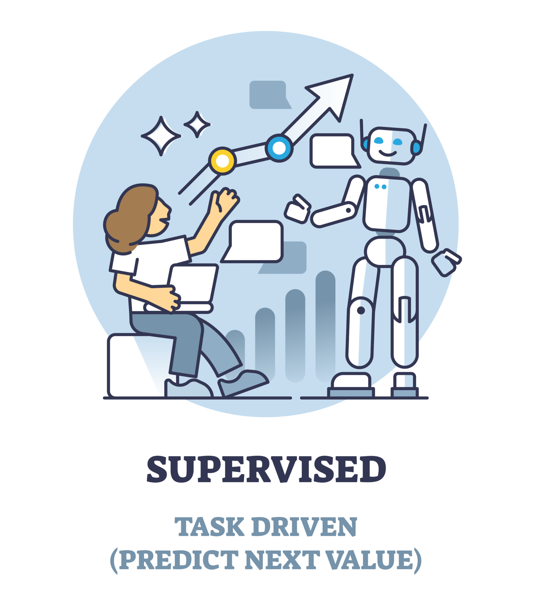
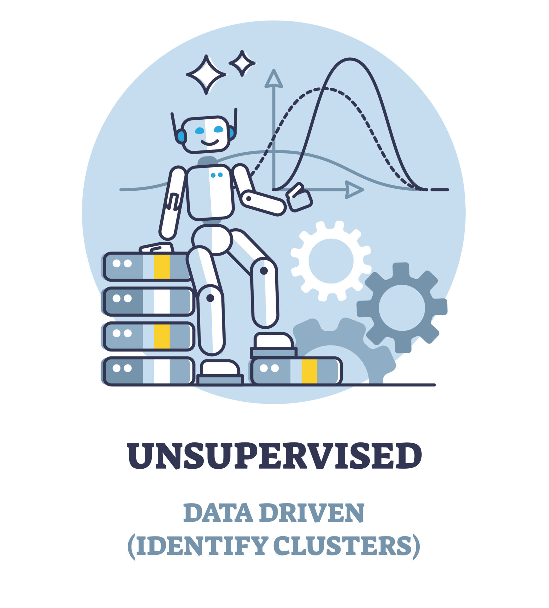
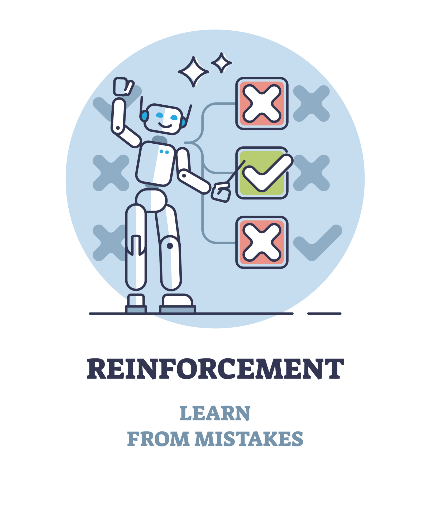

AI 是什么呢？

人工智能（英语：artificial intelligence，缩写为AI），是指计算机系统执行通常与人类智能相关的任务的能力，例如学习、推理、解决问题、感知和决策。它是计算机科学的一个研究领域，致力于开发和研究使机器能够感知其环境并利用学习和智能采取行动以最大限度地提高其实现既定目标的可能性的方法和软件。
人工智能简介
人工智能是计算机科学的一个分支，旨在使计算机能够执行通常需要人类智能才能完成的任务。它涵盖了多个领域，包括机器学习、自然语言处理、计算机视觉、专家系统等。
人工智能的应用
人工智能的应用非常广泛，包括自然语言处理、计算机视觉、语音识别、机器人技术、专家系统等。随着技术的不断发展，人工智能在各个领域的应用也越来越深入，对社会和经济产生了深远的影响。
机器学习
机器学习（英语：machine learning，简称ML）是人工智能的一个分支。机器学习理论主要是设计和分析一些让计算机可以自动“学习”的算法。机器学习算法是一类从数据中自动分析获得规律，并利用规律对未知数据进行预测的算法。因为学习算法中涉及了大量的统计学理论，机器学习与推断统计学联系尤为密切，也被称为统计学习理论。算法设计方面，机器学习理论关注可以实现的，行之有效的学习算法（要防止错误累积）。很多推论问题属于非程序化決策，所以部分的机器学习研究是开发容易处理的近似算法。
机器学习的类型
机器学习主要分为三种类型：监督学习、无监督学习和强化学习。
- 
监督学习：从给定的训练数据集中学习出一个函数，当新的数据到来时，可以根据这个函数预测结果。监督学习的训练集要求是包括输入和输出，也可以说是特征和目标。训练集中的目标是由人标注的。常见的监督学习算法包括回归分析和统计分类.
- 
无监督学习：与监督学习相比，训练集没有人为标注的结果。常见的无监督学习算法有生成对抗网络（GAN）、聚类。
- 
强化学习：机器为了达成目标，随着环境的变动，而逐步调整其行为，并评估每一个行动之后所到的回馈是正向的或负向的。
机器学习的应用
机器学习已广泛应用于数据挖掘、计算机视觉、自然语言处理、生物特征识别、搜索引擎、医学诊断、检测信用卡欺诈、证券市场分析、DNA序列测序、语音和手写识别、游戏和机器人等领域。机器学习在近30多年已发展为一门多领域科际集成，涉及概率论、统计学、逼近论、凸分析、计算复杂性理论、信息论等多门学科。
深度学习

深度学习（英语：deep learning）是机器学习的分支，是一种以人工神经网络为架构，对资料进行表征学习的算法。深度学习中的形容词“深度”是指在网络中使用多层。 早期的工作表明，线性感知器不能成为通用分类器，但具有非多项式激活函数和一个无限宽度隐藏层的网络可以成为通用分类器。
强化学习

强化学习（英语：Reinforcement learning，简称RL）是机器学习中的一个领域，强调如何基于环境而行动，以取得最大化的预期利益。强化学习是除了监督学习和非监督学习之外的第三种基本的机器学习方法。与监督学习不同的是，强化学习不需要带标签的输入输出对，同时也无需对非最优解的精确地纠正。其关注点在于寻找（对未知领域的）探索和（对已有知识的）利用的平衡，强化学习中的“探索-利用”的交换，在多臂赌博机问题和有限MDP中研究得最多。